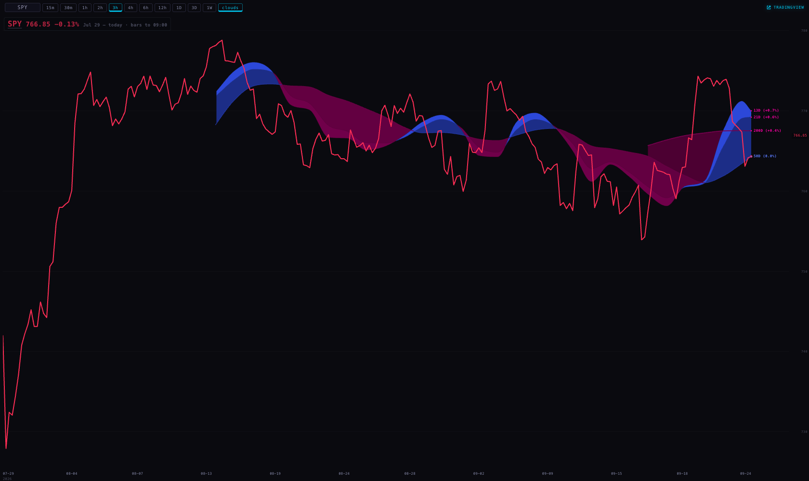
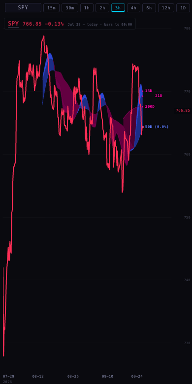

b8fa3a5 · 1680
Short answer: the numbers are right, the bars are not the same bars. On a 3-hour chart the Station draws six bars a session and TradingView draws three, and not one boundary is shared. Our bars also count pre-market and after-hours trading; TradingView's, as it comes out of the box, do not. And our line stops at the last finished bar, so in the middle of the afternoon it can be up to three hours behind the price printed right next to it.
“are we sure this is right? … all of this is a three hour chart. I feel like I'm not seeing the same thing as on TradingView. Like, would it change a lot in bars? How are these lines measured? It's just like the closes or what? Because it's volatile out there.” — Alan, 24 September, about 1 PM ET
Everything below was measured on 24 September 2026 between 13:22 and 13:30 ET against the live chart API
and an independent minute-by-minute source. Branch station/chart-truth-20260924 from b8fa3a5.
Nothing is deployed and no price, average or setting was changed.
Yes — it is just the closes. Every Station chart is a line through the closing price of each completed bar
(chart/index.html:735, p: +r.close). Nothing is averaged, smoothed or interpolated into the price line.
The question that actually matters is what counts as a bar, and that is where we and TradingView part company.
Read from the code on the branch, and confirmed against the live API's own description of what it served (session_anchor: PROVIDER_ET, aggregation: PROVIDER, surface: REST_AGGS_CUSTOM_BARS, price_basis: SPLIT_ADJUSTED).
| range | bar size asked of the chart API | which trading is included | where the bars are cut | what the line draws | the clouds | the live price |
|---|---|---|---|---|---|---|
| 15m | 15 | every trade the provider has, pre-market and after-hours included | every 15 minutes on the Eastern clock — same grid as TradingView | the bar's close | 13/21/50/200-day averages, held flat across the session | never on the line; the live price is the number beside the ticker |
| 30m | 30 | same | every 30 minutes on the Eastern clock — same grid as TradingView | the bar's close | same | same |
| 1h | 60 | same | on the hour, Eastern (09:00, 10:00…). TradingView: 09:30, 10:30… — half an hour out | the bar's close | same | same |
| 2h | 120 | same | even hours, Eastern (08:00, 10:00, 12:00). TradingView: 09:30, 11:30, 13:30, 15:30 | the bar's close | same | same |
| 3h | 180 | same | 03:00, 06:00, 09:00, 12:00, 15:00, 18:00 Eastern — 6 bars a session. TradingView: 09:30, 12:30, 15:30 — 3 bars | the bar's close | same | same |
| 4h | 240 | same | 04:00, 08:00, 12:00, 16:00 Eastern. TradingView: 09:30, 13:30 | the bar's close | same | same |
| 6h | 6h | same | 00:00, 06:00, 12:00, 18:00 Eastern. TradingView: 09:30, 15:30 | the bar's close | same | same |
| 12h | 12h | same | 00:00 and 12:00 Eastern. TradingView: one bar a session | the bar's close | same | same |
| 1D | D | one Eastern session per bar, completed sessions only | the session. Today's unfinished session is not on our chart at all; TradingView shows it forming | the session's close | the same daily averages, one value per bar | never on the line |
| 3D | 3D | three completed sessions per bar | provider-built | the last close in the bar | same | never |
| 1W | W | one week per bar | provider-built | the week's close | same | never |
Where this comes from in the code:
range → bar size chart/index.html:427 · the token the API is given _provider/provider.js:866 ·
the request itself _provider/provider.js:1024 · the line takes the close chart/index.html:735 ·
an equity line never takes the live tick chart/index.html:533-536 ·
the clouds read their own daily series chart/index.html:787 and are daily-locked on every timeframe
_indicators/station-clouds.js:11-21, arithmetic at :100-126 ·
the provider's own note that it anchors every width of three hours or more to Eastern midnight
services/chart-api/server.mjs:23-27 (provider repo) · completed bars only, live price served separately
services/chart-api/server.mjs:1125.
pre_post_market_sessions feature to be enabled
(Extended sessions).
Unless Alan has turned ETH on, his TradingView bars are regular-session only.Three sessions of 3-hour bars, plus the daily line. Our bars come from the chart API
(authority=provider, 240 bars, exactly what the Station asks for). The independent source is a public
minute-by-minute feed for the same four symbols, rolled up twice: once by our rule, once by TradingView's.
Line colour follows the day: green up, red down.
| bucket (ET) | our close | independent, our rule | difference | minutes in the bar |
|---|---|---|---|---|
| 2026-09-23 15:00 | 767.79 | 767.79 | 0.0 | 157m · 15:00-17:58 |
| 2026-09-23 18:00 | 767.32 | 767.32 | 0.0 | 92m · 18:00-19:59 |
| 2026-09-24 03:00 | 763.054 | 763.054 | 0.0 | 113m · 04:00-05:59 |
| 2026-09-24 06:00 | 764.12 | 764.12 | 0.0 | 175m · 06:00-08:59 |
| 2026-09-24 09:00 | 764.285 | 764.285 | 0.0 | 165m · 09:00-11:59 |
| 2026-09-24 12:00 | — | 766.855 | not served yet | 88m · 12:00-13:27 |
Where TradingView's bars fall instead:
| bucket (ET) | close | minutes in the bar |
|---|---|---|
| 2026-09-23 12:30 | 767.6401 | 180m · 12:30-15:29 |
| 2026-09-23 15:30 | 767.78 | 30m · 15:30-15:59 |
| 2026-09-24 09:30 | 767.15 | 180m · 09:30-12:29 |
| 2026-09-24 12:30 | 766.855 | 58m · 12:30-13:27 |
Right now: our newest 3-hour bar closed at 09:00 ET at 764.28. The price beside the ticker was 766.85 at 13:27 ET — a gap of 2.57 (0.34%). Bars per session: 6 ours, 3 TradingView's. Largest disagreement with the independent source, rolled up by our own rule: 0.0 across 15 bars of the last five sessions.
| bucket (ET) | our close | independent, our rule | difference | minutes in the bar |
|---|---|---|---|---|
| 2026-09-23 15:00 | 741.34 | 741.3436 | -0.0036 | 179m · 15:00-17:59 |
| 2026-09-23 18:00 | 740.8 | 740.8 | 0.0 | 119m · 18:00-19:59 |
| 2026-09-24 03:00 | 733.19 | 733.2115 | -0.0215 | 120m · 04:00-05:59 |
| 2026-09-24 06:00 | 734.44 | 734.458 | -0.018 | 180m · 06:00-08:59 |
| 2026-09-24 09:00 | 736.09 | 736.11 | -0.02 | 180m · 09:00-11:59 |
| 2026-09-24 12:00 | — | 739.96 | not served yet | 88m · 12:00-13:27 |
Where TradingView's bars fall instead:
| bucket (ET) | close | minutes in the bar |
|---|---|---|
| 2026-09-23 12:30 | 740.78 | 180m · 12:30-15:29 |
| 2026-09-23 15:30 | 741.17 | 30m · 15:30-15:59 |
| 2026-09-24 09:30 | 739.53 | 180m · 09:30-12:29 |
| 2026-09-24 12:30 | 739.96 | 58m · 12:30-13:27 |
Right now: our newest 3-hour bar closed at 09:00 ET at 736.09. The price beside the ticker was 739.96 at 13:27 ET — a gap of 3.87 (0.53%). Bars per session: 6 ours, 3 TradingView's. Largest disagreement with the independent source, rolled up by our own rule: 0.025 across 15 bars of the last five sessions.
| bucket (ET) | our close | independent, our rule | difference | minutes in the bar |
|---|---|---|---|---|
| 2026-09-23 15:00 | 54.65 | 54.65 | 0.0 | 98m · 15:00-17:58 |
| 2026-09-23 18:00 | 54.66 | 54.66 | 0.0 | 41m · 18:00-19:59 |
| 2026-09-24 03:00 | 54.5 | 54.5 | 0.0 | 13m · 04:00-05:58 |
| 2026-09-24 06:00 | 54.64 | 54.64 | 0.0 | 29m · 06:16-08:56 |
| 2026-09-24 09:00 | 54.2982 | 54.2982 | 0.0 | 153m · 09:02-11:59 |
| 2026-09-24 12:00 | — | 54.375 | not served yet | 88m · 12:00-13:27 |
Where TradingView's bars fall instead:
| bucket (ET) | close | minutes in the bar |
|---|---|---|
| 2026-09-23 12:30 | 54.625 | 180m · 12:30-15:29 |
| 2026-09-23 15:30 | 54.54 | 30m · 15:30-15:59 |
| 2026-09-24 09:30 | 54.48 | 180m · 09:30-12:29 |
| 2026-09-24 12:30 | 54.375 | 58m · 12:30-13:27 |
Right now: our newest 3-hour bar closed at 09:00 ET at 54.3. The price beside the ticker was 54.38 at 13:27 ET — a gap of 0.08 (0.14%). Bars per session: 6 ours, 3 TradingView's. Largest disagreement with the independent source, rolled up by our own rule: 0.0 across 15 bars of the last five sessions.
| bucket (ET) | our close | independent, our rule | difference | minutes in the bar |
|---|---|---|---|---|
| 2026-09-23 15:00 | 225.0681 | 225.1877 | -0.1196 | 180m · 15:00-17:59 |
| 2026-09-23 18:00 | 225.07 | 225.0409 | 0.0291 | 120m · 18:00-19:59 |
| 2026-09-24 03:00 | 222.82 | 222.8882 | -0.0682 | 120m · 04:00-05:59 |
| 2026-09-24 06:00 | 222.88 | 222.8977 | -0.0177 | 180m · 06:00-08:59 |
| 2026-09-24 09:00 | 222.415 | 222.41 | 0.005 | 180m · 09:00-11:59 |
| 2026-09-24 12:00 | — | 223.925 | not served yet | 88m · 12:00-13:27 |
Where TradingView's bars fall instead:
| bucket (ET) | close | minutes in the bar |
|---|---|---|
| 2026-09-23 12:30 | 225.1 | 180m · 12:30-15:29 |
| 2026-09-23 15:30 | 225.51 | 30m · 15:30-15:59 |
| 2026-09-24 09:30 | 223.3564 | 180m · 09:30-12:29 |
| 2026-09-24 12:30 | 223.925 | 58m · 12:30-13:27 |
Right now: our newest 3-hour bar closed at 09:00 ET at 222.41. The price beside the ticker was 223.93 at 13:27 ET — a gap of 1.51 (0.68%). Bars per session: 6 ours, 3 TradingView's. Largest disagreement with the independent source, rolled up by our own rule: 0.1196 across 15 bars of the last five sessions.
| difference | what it does to the picture | is there a good reason? |
|---|---|---|
| Alignment. Our bars are cut on the Eastern clock; TradingView's are cut from the 09:30 open. | On 3h: 6 bars a session against 3, sharing no boundary. Our 09:00 bar mixes half an hour of pre-market with the first two and a half hours of trading. Our 15:00 bar mixes the last hour of trading with two hours of after-hours. | A reason, but not a good one for the eye. The bars are built by the data provider, not by us, and we deliberately never re-cut them locally — the chart API's own note says a local roll-up “may be COMPARED against the provider … it may never be substituted”. That protects the numbers. It does mean a 3-hour bar here is not a 3-hour bar there. |
| Extended hours. We include pre-market and after-hours; TradingView by default does not. | Two of our six 3-hour bars a session are almost entirely overnight trading (volume in the 03:00 and 18:00 buckets runs about 0.3% of the session's). Thin overnight prints get the same visual weight as the open. | Partly. Including them is a defensible choice — it is what traded. It is not what TradingView shows unless ETH is on, so the two charts cannot agree while this differs. |
| The live bar. TradingView always has a forming bar. We serve completed bars only. | At 13:27 ET our newest 3-hour bar had closed at 12:00. SPY's line sat at 764.28 while the price beside it read 766.85 — 2.57 points, 0.34%. QQQ 0.53%, NVDA 0.68%, XLF 0.14%. | Yes — and it must stay. The standing rule is that a live tick never rewrites a bar, after a live quote was found overwriting settled candles and being cached for a day. The fix is to say the line ends at 12:00, not to invent a bar. |
| Today is missing from the daily chart. Our 1D line ends at the last completed session. | All four symbols: newest daily bar 23 September, while the market was open on the 24th. | Same reason as above, same fix: say so. |
| Missing bars? None found. | Every 3-hour bucket the independent source produced under our rule exists in our series, for all four symbols, across five sessions. No gaps. | — |
| Are the numbers themselves wrong? No. | Rolled up the same way, our closes and the independent source's agree: SPY and XLF to the cent (0.0000), QQQ within 0.025, NVDA within 0.12 — ordinary differences between one venue's consolidated tape and another's. | — |
The Station could not answer Alan's question anywhere on the screen. It can now.
?barrule=1 (or the key station.barrule once for this browser). The first two captures below are
byte-identical — same sha256 — which is the proof that the default pane did not change.b8fa3a5 · 1680
?barrule=1 · 1680 · badge reads “SPY 766.85 −0.13% Jul 29 – today · bars to 09:00”
?barrule=1 · 390 (phone)What is actually in those captures, looked at rather than assumed: the SPY 3-hour line in red (the day was down), the indigo/pink cloud ribbon with its 13D/21D/50D/200D labels at the right edge, the range buttons across the top, the TRADINGVIEW link top-right, and the badge top-left. In the first two the badge reads “SPY 766.85 −0.13%” and stops there. In the last two it continues “Jul 29 – today · bars to 09:00”, in the same small mono grey. The price in the badge (766.85) is the live quote; the line's last point is 764.28 — the gap this page is about, visible in one picture.
Tests. tests/chart-bar-rule.test.mjs, 11 new tests, all passing: every range states a rule;
the 3h sentence names both grids; only 15m and 30m may claim agreement; daily-and-wider say “completed sessions only”;
the clock is Eastern and not the machine's zone; a live placeholder can never be mistaken for a completed bar; the switch
is off unless asked; the chart shell still mirrors the chart byte-for-byte. Whole suite on the branch:
583 tests, 563 pass, 20 fail — the same 20 that already failed at b8fa3a5, none of them touched by this work.
| decision | what it means | my recommendation |
|---|---|---|
| 1. Should the pane say what a bar is, by default? | One quiet line in the badge: “bars to 09:00”. It is built and off. Turning it on is a one-line change. | Yes, on. You asked the question out loud today; the chart should answer it without a hover. |
| 2. Should intraday bars be cut from 09:30 like TradingView, and drop the overnight session? | It would make the two charts comparable bar for bar. It means asking the provider for session-anchored, regular-hours bars — a provider-side change, not a client one. Until that exists the only client route is re-cutting bars locally, which the chart API forbids, and which would put a second definition of “a 3-hour bar” into the product. | Ask the provider first; do not re-cut locally. If the provider cannot serve it, keep our bars and keep saying clearly that they are ours. |
| 3. Should the daily chart show today's unfinished session? | TradingView does. We would have to build it from today's minutes, which is exactly the live-tick-into-a-bar rule we banned after it corrupted cached candles. | No. Keep completed bars only, and keep the line that says how old the last one is. |
Branch station/chart-truth-20260924 · commits 3012c67, 977a763 on
b8fa3a5 · nothing deployed · 2026-09-24 17:44Z